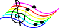

EXPLANATION OF THE GLOSSING SYSTEM
(to understand how I describe the signs in this translation).
Refrain: (<) GLORY, (>) PRAISE, OFFER-TO-God GOD. ONLY HE-rt SHINE-DOWN-ON OUR DAY. MANY BLESS+ HE-rt alt.GIFT-TO"each" IF (2h)YOU TRUST HIS-rt WAY++. Refrain
1. WE (<) DAUGHTER+, (>) SON+, FROM HIM-rt. HIMSELF (<) BUILD VALLEY, (>) BUILD LAND FLAT. GO-AHEAD PRAISE MIRACLE HE-rt DO EVERY HEART HERE SING. Refrain
2. HE-rt WISE, KNOW HOW MAKE US STRONG. IDEA~LIKE GOLD BECOME STRONGER THROUGH FIRE. SIN STILL HAVE POWER, BUT GOD WITH US, WILLING SAVE. Refrain
3. EVERYDAY, EVERY MOMENT, OUR GOD WAIT"over time" SAVE US. ALWAYS READY FIND PEOPLE FEEL LOST. WILLING ANSWER OUR PRAYER. Refrain
4. WE IDEA~LIKE LAND DRY. HARD GROW FOOD. HE-rt HAVE-MERCY-ON-us SEND RAIN. NOW LIFE BECOME RIVER OVERFLOW. ANYONE DRINK CAN. Refrain
Notes: GLORY - (2h)[5], POs><, FOs away from signer, DH which is on top wiggles fingers while ascending. For an animated gif of this sign, see Animated dictionary of religious signs - Deaf Missions: Glory.
HE-rt - Underlined words are honorific indices ("indexes"), using the FT of the upturned palm to indicate who is being honored.
SHINE-DOWN-ON - - [O^] is held high PO > signer; hands open to [5^] while moving > signer.
BLESS - (2h)[O^], POs ><, held at mouth. Hands are brought downwards while opening to (2h)[5]. For a QuickTime file of this sign, see ASL Pro: Bless.
alt.GIFT-TO"each" - (2h)[X], POs ><, FOs > the recipents, hands move together from NDS to DS.
FLAT - (2h)[B], POs down, FOs ><, hands are held at eye level, DH further away, and DH moves straight away to show flatness.
GO-AHEAD - (2h)[B^ dot], POs ><, FOs away, move forward in a jerk.
MIRACLE - WONDERFUL(1x) WORK. For an animated gif of this sign, see Animated dictionary of religious signs - Deaf Missions: Miracle.
IDEA~LIKE - a blending where IDEA has a [Y] instead of an [I] in anticipation of LIKE which is signed smoothly right afterwards.
SIN - (2h)[X] touch their respective sides of the mouth, descend to neutral space and circle antisymmetrically parallel to the chest. For an animated gif of this sign, see Animated dictionary of religious signs - Deaf Missions: Sin.
HAVE-MERCY-ON-us - (2h)[open 8], POs > signer, hands move in vertical circles normal (perpendicular) to the chest. For a QuickTime file of this sign, see ASL Pro: Mercy - 2.
OVERFLOW - [5], PO down, FO away, covers top of [S], PO > DS, FO away, and FT wiggle as the hand moves away, like a cup overflowing. For a QuickTime movie of this sign, see ASL browser - overflow.
Lyrics:
Refrain: Glory and praise to our God, who alone gives light to our days. Many are the blessing he bears to those who trust in his ways.
1. We, the daughters and sons of him who built the valleys and plains, praise the wonders our God has done in every heart that sings.
2. In his wisdom he strengthens us, like gold that's tested in fire. Though the power of sin prevails, our God is there to save.
3. Every moment of every day, our God is waiting to save, always ready to seek the lost, to answer those who pray.
4. God has watered our barren land and spent his merciful rain. Now the rivers of life run full for anyone to drink.
To hear the music (without words), go to Bob's MIDI sequences - hymn-type MIDI sequences and click on "Glory and praise to our God (D. Schutte) - SATB".